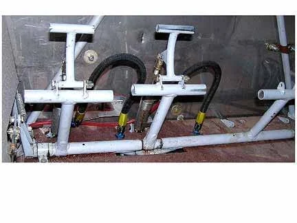

View photo ↗MODEL UNKNOWNLEGACY
Uncredited factory-manual example
Pedals and hose clearance
Front-facing pedal and cylinder relationships are visible beside the firewall; useful for reviewing hose clearance around moving pedals.
Controls / Rudder Pedals
Bearhawk / AviPro · Legacy Fuselage Manual · PDF p19
View original source ↗
Model unknown · Companion applicability unverified.